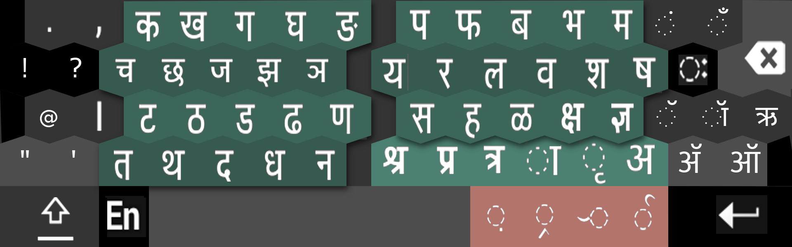
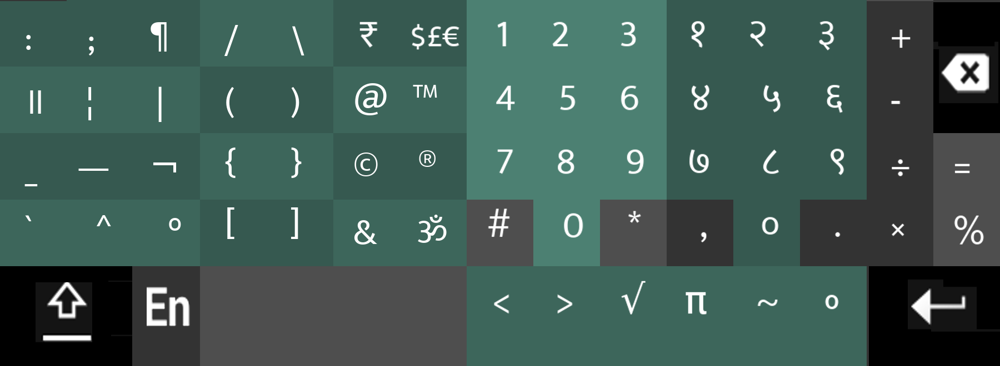
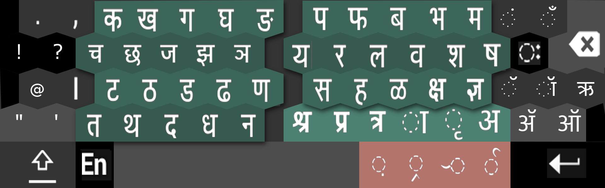
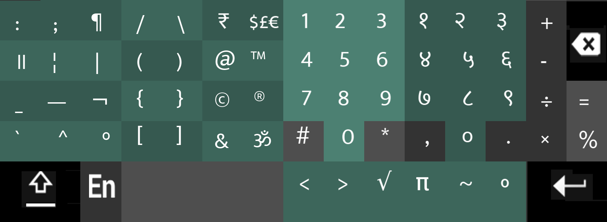

Re-designing Swarachakra
Swarachakra is a series of Indian language keyboard available on android platform. Currently it is available in 12 Indian languages.

Motivation
During the evaluation of virtual keyboards, we encountered that users were committing several errors which could be easily fixed by redesigning it. However, during the process of the re-design, we considered several factors like frequently used consonants and vowels, fat finger problem, segregation of same keys, the various sizes of phones available in the market, etc.
Experimenting with the shapes of the key was considered one of the way to tackle the above problems. To reduce the error of fat finger problem and accidental tap on adjacent keys we also tried the idea of placing the keys zigzag. In addition to this, we also increased the size of a chakra which gave a large angle while selecting each syllable. However, this reduced the errors while applying strokes in chakra.
Problems
One size doesn’t fit for all – Initially, Swarachakra was available in two sizes but, eventually, we found that these sizes were insufficient since the variation in currently available screen sizes is much.
Accidental press on adjacent keys – With the aim of gaining speed, we found many users pressed on adjacent. Which in turn took time for correction.
Grouping of similar keys- In the Earlier version, of keyboard keys which performed similar function was distributed across the keyboard which made difficult for the user to create a conceptual model of keyboard.
Frequently used keys in lower rows- For frequently used keys at the bottom row, created ergonomic issues like when chakra pops up it was difficult to slide the thumb in the downward direction especially while selecting (u, uu a).
Fat finger problem- Many participants faced a problem of the fat finger as key sizes were small and were next to each other, so the probability of touching the adjacent keys is higher.
Creating keys for frequently used conjuncts- In Marathi language there are many conjuncts which were frequently used and which was required to be made by joining two or more consonant.
Solutions
One size do not fit for all- Considering the range of screen sizes (2.5-5.5 Inch) available in market, we decided to come up with 5 different sizes that
can satisfy this need of variation in screen sizes.
Errors of adjacent buttons- Since this consisted of one of the major error.
This was one of the consistently committed error. We approached this problem with two solutions
1)Having a gutter space between two adjacent buttons. Which will be ‘No man’s land’, getting no input typed whenever pressed.
This actually reduced typing unintentional keys
2)Breaking the linear arrangement and place the keys in zig zag manner.
Both of this solutions significantly reduced number of errors, while chasing for speed.
Grouping of Similar keys- - Keys performing similar action, were grouped together and color coding was done to distinguish each group.
Which helped building the conceptual model of user.
Frequently used keys in lower rows- This problem was tackled my shifting the keys up in higher rows, so selection of
vowels in lower portion of chakra would not be difficult task..
Fat finger problem- Only one way to discard this problem was by increasing the size of the keys.
Adding key for frequently used conjuncts- Conjuncts which were frequently used by user, were given a specific keys.
Process
Experimenting with hexagonal keys

 


 We taught hexagonal keys would give sufficient space to each letter and would solve problem of tapping adjacent keys, fat finger problem.
Hexagonal also made the keys up front as compared to earlier version, which also allowed the user to find keys easily.
In horizontal layout visible gutter was used so as user can easily segregate similar sounding consonant and can find a particular constant easily.
In Shifted layout, both vertically and horizontally division of keys with similar purpose was created, so user can easily build his conceptual model